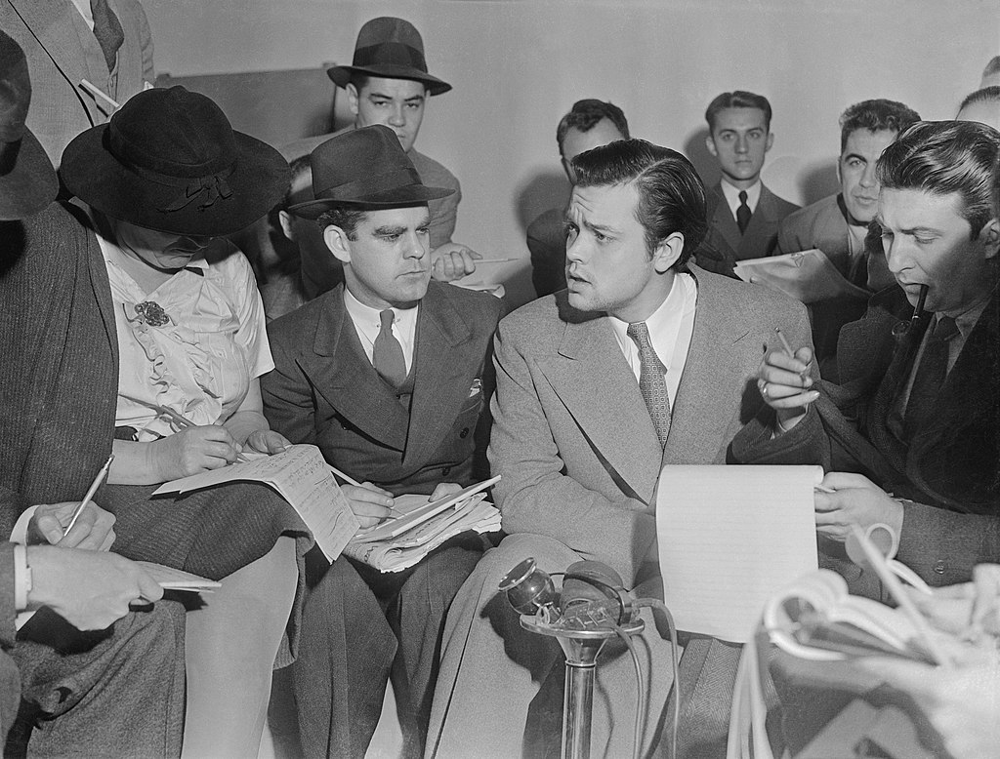

George Orson Welles (May 6, 1915 – October 10, 1985) was an American actor, director, writer and producer who is remembered for his innovative work in radio, theatre and film. He is considered one of the greatest filmmakers of all time.
While in his twenties Welles directed a number of high-profile stage productions for the Federal Theatre Project, including an adaptation of Macbeth with an entirely African American cast and the political musical The Cradle Will Rock. In 1937 he and John Houseman founded the Mercury Theatre, an independent repertory theatre company that presented a series of productions on Broadway through 1941, including Caesar (1937), a Broadway adaptation of William Shakespeare's Julius Caesar.
In 1938, his radio anthology series The Mercury Theatre on the Air gave Welles the platform to find international fame as the director and narrator of a radio adaptation of H. G. Wells's novel The War of the Worlds, which caused widespread panic because many listeners thought that an invasion by extraterrestrial beings was actually occurring. Although some contemporary sources say these reports of panic were mostly false and overstated, they rocketed Welles to notoriety.
His first film was Citizen Kane (1941), which is consistently ranked as the greatest film ever made, which he co-wrote, produced, directed and starred in as Charles Foster Kane. Welles released twelve other features, the most acclaimed of which include The Magnificent Ambersons (1942), The Lady from Shanghai (1947), Touch of Evil (1958), The Trial (1962), Chimes at Midnight (1966) and F for Fake (1973). His distinctive directorial style featured layered and nonlinear narrative forms, uses of lighting such as chiaroscuro, unusual camera angles, sound techniques borrowed from radio, deep focus shots and long takes. He has been praised as "the ultimate auteur".

Welles was an outsider to the studio system, and struggled for creative control on his projects early on with the major film studios in Hollywood and later in life with a variety of independent financiers across Europe, where he spent most of his career. Many of his films were either heavily edited or remained unreleased. Some, like Touch of Evil, have been painstakingly re-edited from his notes. With a development spanning almost 50 years, Welles's final film, The Other Side of the Wind, was released in 2018.
Welles had three marriages, including one with Rita Hayworth, and three children. Known for his baritone voice, Welles performed extensively across theatre, radio and film. He was a lifelong magician noted for presenting troop variety shows in the war years. In 2002 he was voted the greatest film director of all time in two British Film Institute polls among directors and critics. In 2018 he was included in the list of the 50 greatest Hollywood actors of all time by The Daily Telegraph.